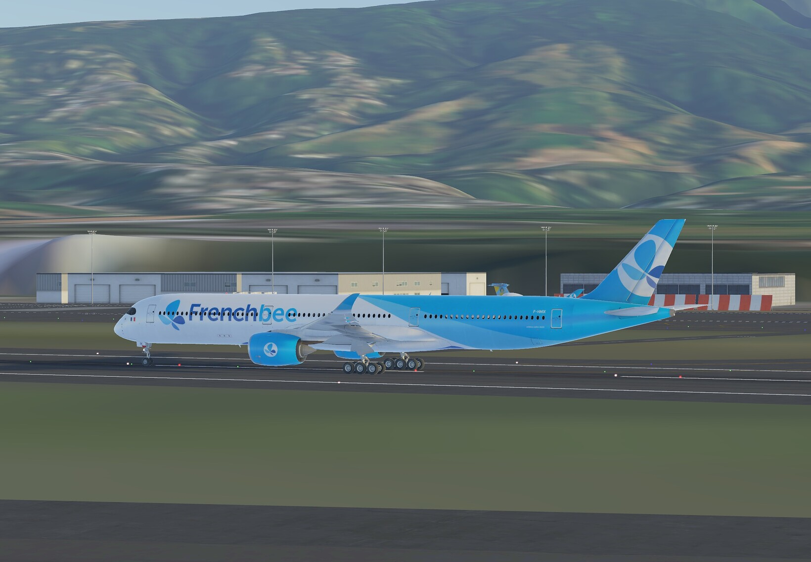
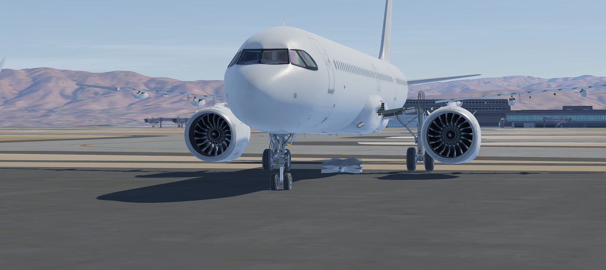
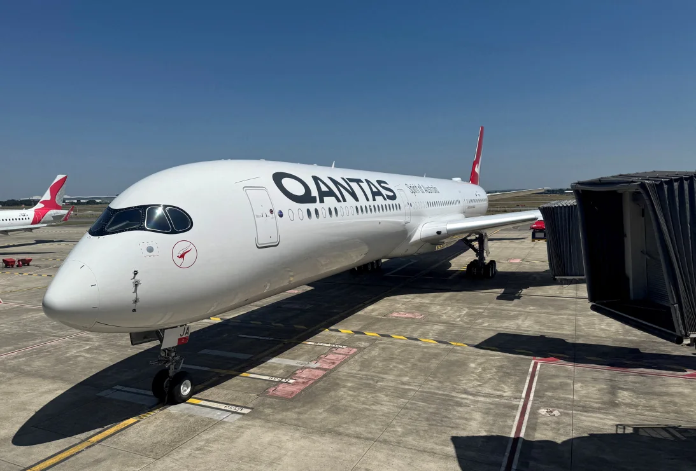

Thanks Frank_Cullimore,Gwengo and Jaxx for these pics, that can be foubnd entirely in the IFC version of this newsletter. Look at this beautiful Etihad A350-1000.
The excitement continues building for the A350-1000 as more and more liveries are revealed. The Ethiopian A350-1000 was spotted by Jaxx on June 12th while flying over Nigeria. The French Bee A350-1000 was spotted by Jaxx at FMEE on June 16th. The aircraft seems to be fully modeled, so it is only a matter of time before it is released.
Thanks to Flying_Chris for these pics.

This was spotted by Flying_Chris at KSJC on June 12th. The fuselage seems to be fully modeled whilst the wings are not modeled yet. From my knowledge, the A321neo will be released first.
AI was cool when it first came out but as it grew, the actual effects of AI started to sink in and now it has gotten to the point where people, myself included, have become fed up with AI.
But companies on the other hand are forcing AI onto employees. A study shows that you are 32% more likely to get laid off if you do not embrace AI into your workspace.
And the people have had enough of companies shoving AI and subscriptions down our throats, and this is why people are moving to one-purpose devices. Devices like the iPod and Nintendo DS have seen a spike in sales and demand, and even modern handheld consoles are getting some love. For example, the AYN Thor is one of the most popular handheld consoles currently.
And dear reader, you do not have to worry, The Infinite News Station will never use AI. One interesting thing is that companies are still not getting the message, which is really weird because people are loud about their thoughts on AI. My stand on AI is that it has gone too far. We need to stop before it ruins more things.
Infinite Live was announced a couple weeks ago and I am over the moon about it because it adds a layer to Infinite Flight that I love. I mean, “Every aircraft has a story” alone excites me so much. For more details you can check out the full blog by Infinite Flight at "Introducing the Next Chapter of Infinite Flight Live".
I could not be more excited for it. Let me know your thoughts on Infinite Live.

Look at this beauty. This beautiful aircraft will fly from Sydney to London starting October 2027. Meanwhile, Qantas has not confirmed any dates for the Sydney to New York flight, only stating that it will fly later in 2027.
This will be a historic feat for Australia, aviation and Qantas. What are your thoughts on the 22-hour flights?
Google has released Android 17 for Pixel devices with many features, most notably the new multitasking feature called “Bubbles”. There are also many productivity, gaming and security improvements included in this release.
This update is currently only available for Pixel devices.
After the Barcelona-Catalunya Grand Prix, in which Sir Lewis Hamilton secured his first win for Scuderia Ferrari, Formula 1 moves on with its European tour to the Austrian Grand Prix this upcoming weekend.
After a disappointing race for championship leader Kimi Antonelli, he hopes to make a comeback this weekend. Meanwhile Max Verstappen and Red Bull Oracle Racing seem to be struggling with both cars. To make matters worse, the FIA has determined that Red Bull has the best engine on the grid.
Red Bull's response to that is: “The math is simply wrong.”
Overall the upcoming weekend seems very promising. What are your thoughts?
Riyadh Air completed its first passenger service on June 10th, 2026 from Riyadh to London Heathrow using a Boeing 787-9. The beautiful violet livery is a stand-out amongst the aviation industry.
What are your thoughts on Riyadh Air?
On June 12th, 2025, a Boeing 787-8 Dreamliner crashed shortly after takeoff in Ahmedabad, India. Now over a year after the accident, only very little official information has been released to the public.
The final report was delayed by the AAIB and they promised an Interim Report instead. It was supposed to come out on June 12th, 2026, the anniversary of the accident. Instead we got a statement saying nothing important and then a media statement by the Indian Minister of Aviation saying:
“The investigation is ongoing.”
There have been many theories, but none of them really seem to factor in all the evidence. My personal opinion is that the fact is: We don't know.
As much as we like to make theories, we cannot ignore the fact that we know very little, and it is not enough to make a valid theory. Using unofficial data that is not from the FDR or the investigators is dangerous territory.
We should not be afraid or ashamed of saying we do not know.
The FAA has announced that it likely will not certify the long-awaited Boeing 777X this year. This puts the 2027 delivery date at risk.
The FAA has said: “The 777X will be certified after the 737 MAX 7 and MAX 10, which are expected to pass trials by the end of the year.”
Launch customer Lufthansa is eager for the 777X's delivery. It has now been 6 years past the original entry-into-service date and 14 years since the official launch in 2013.
What are your thoughts on the 777X?
Magicalchesecat and Arendiuz.
Thank you for reading.
Sincerely,
Magicalchesecat